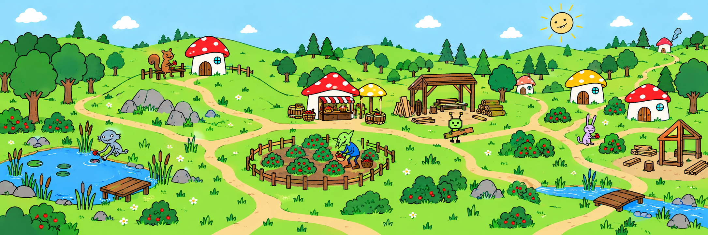

A small economy. People with their own reasons.
First visit opens a reproducible world four hours in. Start a new experiment to watch from zero. Local prototype; approved character artwork, placeholder map and animation. No LLM.

Click a creature to follow its reasons, relationships and commitments.